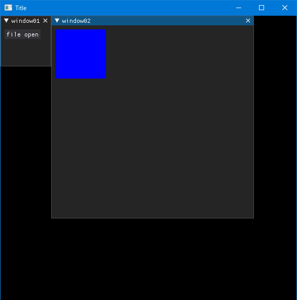
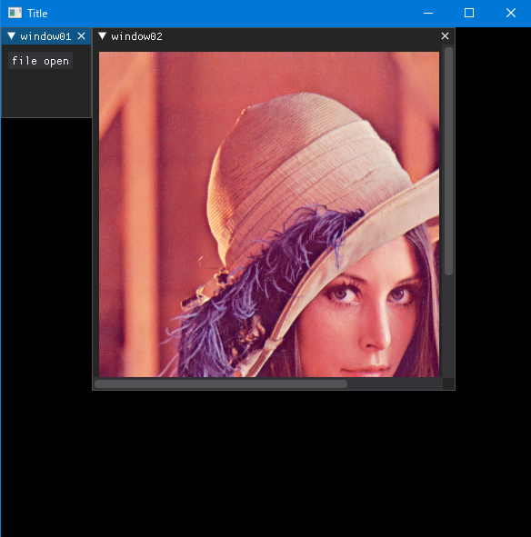

Dear PyGuiを使って、画像ファイルを表示するアプリケーションを作ってみます。
後に、画像処理なども行う予定なので、表示以外はOpenCVを利用します。
画像を描画する手順としては、以下の通りです。
- 画像を「テクスチャー」にして、 「テクスチャーレジストリ」に追加します。
- 「テクスチャー」を描画コマンドを使って、描画用コンテナに追加します。
- 追加できるコンテナは、ビューポート／ウィンドウ／ドローリスト（drawlist）です。
- 画像を描画するコマンドには、
dpg.draw_image()やdpg.add_image()があります。
テクスチャー
Dear PyGuiでは、画像を「テクスチャー」にして「テクスチャーレジストリ」に追加する必要があります。
以下はテクスチャーレジストリの作成の例です。ウィンドウなどと同様です。
with dpg.texture_registry():
dpg.add_static_texture(image_width, image_height, image_data, tag="texture_id")テクスチャーには以下の3タイプがあります。
- Static（静的）
- 頻繁に変更されない画像に使用されます。
- 一度読み込んだテクスチャーを変更することはできません。
- Dynamic（動的）
- 変化する可能性のあるテクスチャに使用されます。
- テクスチャーを変更することが可能です。ただし、サイズを変更することはできません。
- Raw（生データ）
- 動的テクスチャと同じように利用します。
- 主な違いは「テクスチャーにできるのは配列のみ」、「安全チェックは行われない」。
image_dataには、floatのRGBA形式の配列を入力する必要があります。
OpenCVを利用する場合は、cv2.cvtColor()を使ってRGBA形式にし255で割って、0から1の小数に変換する必要があります。
また、画像を描画するコマンドには、dpg.draw_image()やdpg.add_image()があります。
今回は、dpg.add_image()を使います。
今回はドローリストは使わず、ウィンドウに直接に、画像を描画します。
サンプルスクリプト
上記の方法で作成したサンプルクリプト10です。
起動時に、実行するpyファイルと同じフォルダに以下の画像「Default.png」を入れてください。
# サンプルスクリプト10
import os
import dearpygui.dearpygui as dpg
import easygui as eg
import numpy as np
import cv2
# 実行するpyファイルのあるディレクトリ名の取得
DIR = os.path.dirname(__file__)
# DearPyGuiのアイテ「x」がすでにある場合は削除する関数
delItemIfExist = lambda x: dpg.delete_item(x) if dpg.does_item_exist(x) else ""
# 画像をRGBA形式で開く関数
imread_rgba = lambda x : cv2.cvtColor(cv2.imread(x), cv2.COLOR_BGR2RGBA)
# 画像ファイルをテクスチャーレジストリに登録し、描画する関数
def draw_image_opencv(img, tag_texture_registry, parent=None):
h, w, ch = img.shape
if ch != 4:
return
delItemIfExist("txtr_for_this_func")
delItemIfExist("img_for_this_func")
dpg.add_static_texture(w, h, img/255, parent=tag_texture_registry, tag="txtr_for_this_func")
if parent is None:
return dpg.add_image("txtr_for_this_func", tag ="img_for_this_func", width=w, height=h)
else:
return dpg.add_image("txtr_for_this_func", parent=parent, tag ="img_for_this_func", width=w, height=h)
# ボタンを押した時のコールバック
def button_callback(sender, app_data, user_data):
fname = eg.fileopenbox()
img = imread_rgba(fname)
draw_image_opencv(img, "texture_registry_01", parent="window2")
# 以下、DearPyGuiの基本構成
dpg.create_context()
dpg.create_viewport(title='Title', width=600, height=600)
# テクスチャーレジストリの作成
with dpg.texture_registry(tag="texture_registry_01"):
pass
# window01の作成
with dpg.window(label="window01"):
dpg.add_button(label="file open", callback=button_callback)
# windows02の作成（Default.pngを読み込みます）
with dpg.window(label="window02", pos=(100,0), width=400, height=400, tag="window2", horizontal_scrollbar=True):
fname = DIR + "/Default.png"
img = imread_rgba(fname)
draw_image_opencv(img, "texture_registry_01")
dpg.setup_dearpygui()
dpg.show_viewport()
dpg.start_dearpygui()
dpg.destroy_context()実行すると、

[file open]ボタンを押して、画像ファイルを選択すると、

サンプル10を簡単に説明します。
ファイルオープンダイアログは「EasyGUI」を使っています。「pip install easygui」でインストールしておきましょう。とても簡単に汎用的なGUIを利用することができるモジュールです。
まず、ラムダ式を使って、DearPyGuiのアイテム「x」がすでにある場合は削除する関数「delItemIfExist」と、画像をRGBA形式で開く関数「imread_rgba」を作成します。
さらに、それらを利用して、画像ファイルをテクスチャーレジストリに登録し、描画する関数「draw_image_opencv」を作成します。すでにあるアイテム「txtr_for_this_func」「img_for_this_func」（本関数内でのみ使用します）を削除し、再作成しています。
ボタンが押されると、ファイルオープンダイアログが開き、次に「draw_image_opencv」関数が実行されます。
with window01()内で呼び出され、window01アイテムにテクスチャーを描画する場合はparent=Noneで構いません。
今回は、window01アイテムで呼び出されて、window02アイテムに描画するので、parent="window2"と指定する必要があります。
dpg.create_context()以降は、今まで繰り返してきたDearPyGuiのアイテムの作成や表示などの基本的な流れです。
dearpygui.dearpygui.window(**kwargs)の引数の1つの「tag」について少し説明します。
「tag」はプログラムでアイテムを参照するために使用されるユニークな IDです。「label 」が使用されていない場合は、これが「label 」になります。
サンプル10では以下のようにしています。
with dpg.window(tag="window01"):
・・・つまり、「label 」もwindow01になります。